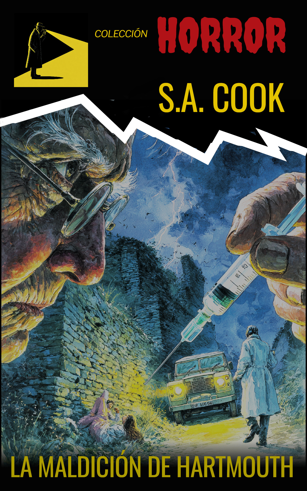
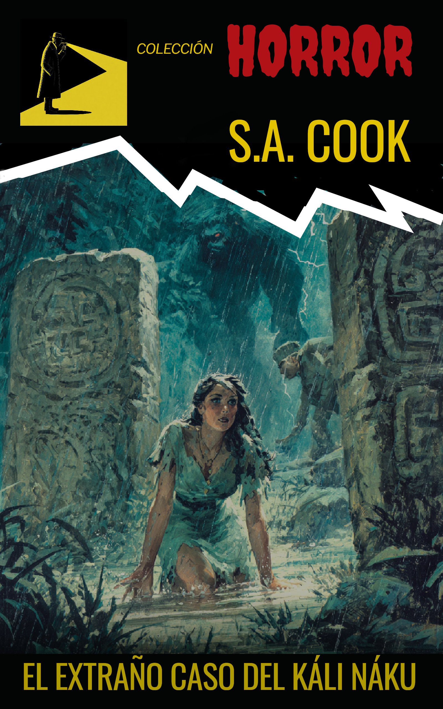

Historias de exploración, arqueología y horrores antiguos.

Londres, 1973.
Un coleccionista de libros raros llega a Hartmouth buscando un volumen perdido.
Nunca debió encontrarlo.
El pueblo no aparece en mapas por accidente.
Sus calles húmedas y hoteles decrépitos ocultan algo que ha sobrevivido demasiado tiempo.
Homicidios. Intrigas. Una anciana que no muere.
Y un libro que no debería existir.
Porque en Hartmouth no todo lo que se vende puede comprarse.
Y hay deudas antiguas que siempre se pagan.

1888.
Una colonia inglesa en Honduras es arrasada por algo que no debería existir.
Meses después, Londres recibe sus restos.
Un cadáver imposible.
Una mariposa envenenada.
El rastro de una expedición que nunca debió partir.
Baker y Wolfe siguen las pistas hasta la selva…
y hacia algo más antiguo que cualquier ciencia.
El Káli Náku.
No es un mito.
No es una bestia.
Es una criatura de otra dimensión… y alguien ha aprendido a llamarla.
Y hay cosas que no fueron hechas para ser encontradas.